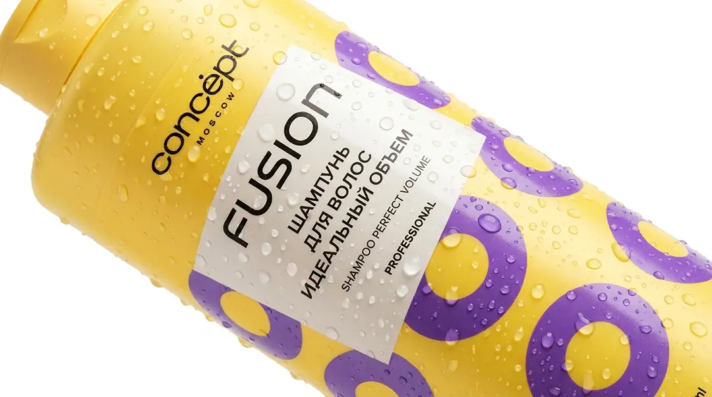

Возможности производства
Реализуем самые смелые дизайнерские концепции
Особенности для бьюти-сферы:
Этикетка для косметики должна не только привлекать внимание, но и сохранять идеальный вид во влажной среде ванной комнаты.
- Стойкость к стиранию: Специальные защитные лаки и ламинация предотвращают стирание текста при трении и частом контакте с водой.
- Двухсторонние этикетки: Печать по клеевому слою для прозрачных флаконов — текст или рисунок виден сквозь сам продукт (гель, шампунь).
- Малые тиражи и SKU: Цифровая печать идеальна для линеек с множеством ароматов и оттенков при небольших общих объемах.
- Интеграция "Честный ЗНАК": Встраиваем обязательную маркировку для парфюмерии органично в дизайн, без ущерба эстетике упаковки.

Чек-лист (PDF)
7 критических ошибок при заказе этикеток для косметики
Скачайте бесплатный PDF-файл, который убережет вас от слива бюджета. Узнайте, как избежать разъедания этикетки маслами, появления пузырей на флаконе и ошибок с прозрачностью пленок.
✓ Чек-лист успешно отправлен на вашу почту!
Частые вопросы по бьюти-этикеткам
Отвечают технологи Типографии РОСТ
Выдержит ли этикетка постоянный контакт с водой в душе?
Да. Для шампуней и гелей для душа мы используем полипропиленовые и полиэтиленовые пленки. Они абсолютно не боятся влаги, не размокают и надежно держатся на пластиковой таре даже при деформации флакона.
Можно ли сделать так, чтобы этикетки не было видно на прозрачном флаконе?
Это называется эффект «No-Label Look». Мы используем суперпрозрачные пленки с высокопрозрачным клеем. При наклеивании границы этикетки визуально растворяются, оставляя только ваш дизайн на флаконе.
Печатаете ли вы микрошрифты для состава (INCI)?
Да, наше оборудование позволяет печатать тексты составов минимальным кеглем с идеальной резкостью. Весь текст будет читаемым и соответствовать требованиям регламентов ТР ТС.
Обязательно ли печатать «Честный ЗНАК» на парфюмерии?
Да, духи и туалетная вода подлежат обязательной маркировке. Мы официально работаем с кодами ЦРПТ и можем интегрировать код Data Matrix прямо в дизайн вашей упаковки.